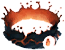

Открыть в интерактивной вики →
| Требуемый уровень | 50 |
|---|---|
| Редкость | Сет |
| Улучшения | звёзды, орбы, осколки |
| Тип | Ремни |
| Цена | 700 000 |
| Ремонт | 280к |
| Заряды | 10 000 |
| Зарядка | 3 |
| Требуемая мощь | 50 |
| Требуемый класс | Огненный маг |
| Мощь | 20 |
| Знание | 20 |
| Мана | 80 |
| Сопр. холоду | 25 |
Комплект
Одеяния Жидкого Огня
Дроп
Модификаторы
Модификатор магического урона +10
Шанс двойной атаки +6
Мощь +16
Шанс двойной атаки +6
Мощь +16